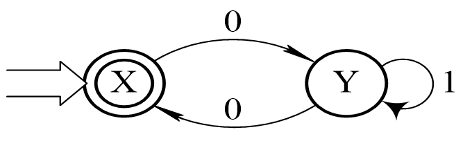
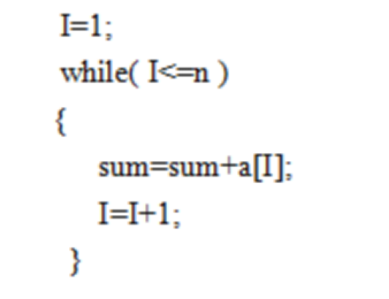

习 题 2
2.1 完成下列选择题：
(1) 词法分析所依据的是 。
A．语义规则 B．构词规则
C．语法规则 D．等价变换规则
(2) 词法分析器的输入是 。
A．单词符号串 B．源程序
C．语法单位 D．目标程序
(3) 词法分析器的输出是 。A．单词的种别编码 B．单词的种别编码和自身的值C．单词在符号表中的位置 D．单词自身值
(4) 状态转换图(见图2-36)接受的字集为 _______。A．以0开头的二进制数组成的集合B．以0结尾的二进制数组成的集合 C．含奇数个0的二进制数组成的集合 D．含偶数个0的二进制数组成的集合

图2-36 习题2.1的DFA M
(5) 对于任一给定的NFA M， 一个DFA M'，使L(M) =L(M')。A．一定不存在 B．一定存在 C．可能存在 D．可能不存在
(6) DFA适用于 。A．定理证明 B．语法分析 C．词法分析 D．语义加工
(7) 下面用正规表达式描述词法的论述中，不正确的是 。A．词法规则简单，采用正规表达式已足以描述B．正规表达式的表示比上下文无关文法更加简洁、直观和易于理解C．正规表达式描述能力强于上下文无关文法D．有限自动机的构造比下推自动机简单且分析效率高
(8) 与 (a∣b)*(a∣b) 等价的正规式是 。A．(a∣b)(a∣b )* B．a*∣b* C．(ab)*(a∣b)* D．(a∣b)*
(9) 在状态转换图的实现中，____一般对应一个循环语句。A．不含回路的分叉结点 B．含回路的状态结点C．终态结点 D．A～C都不是
(10) 已知DFA Md= ({s0, s1, s2}, {a, b}, f, s0, {s2})，且有： f(s0, a) =s1 f(s1, a) =s2 f(s2, a) =s2 f(s2, b) =s2 则该DFA M所能接受的语言可以用正规表达式表示为____。A．( a∣b )* B．aa ( a∣b )* C．( a∣b )*aa D．a ( a∣b )*a2.2 什么是扫描器？扫描器的功能是什么？
2.3 设M= ({x, y}, {a, b}, f, x, {y}) 为一非确定的有限自动机，其中f定义如下： f(x, a) = {x, y} f(x, b) = {y} f(y, a) = Φ f(y, b) = {x, y}试构造相应的确定有限自动机M'。2.4 正规式 (ab)*a与正规式a (ba)*是否等价？请说明理由。
2.5 设有L(G) ={a2n+1b2ma2p+1∣n≥0, p≥0, m≥1}。(1) 给出描述该语言的正规表达式；(2) 构造识别该语言的确定有限自动机(可直接用状态图形式给出)。2.6 有语言L={w∣w∈(0, 1)+，并且w中至少有两个1，又在任何两个1之间有偶数个0}，试构造接受该语言的确定有限状态自动机(DFA M)。
2.7 已知正规式 ((a∣b)*∣aa)*b和正规式 (a∣b)*b。(1) 试用有限自动机的等价性证明这两个正规式是等价的；(2) 给出相应的正规文法。2.8 构造一个DFA M，它接收Σ = {a, b}上所有不含子串abb的字符串。2.9 构造一个DFA M，它接收Σ = {a, b}上所有含偶数个a的字符串。
2.10 下列程序段以B表示循环体，A表示初始化，I表示增量，T表示测试：
请用正规表达式表示这个程序段可能的执行序列。

2.11 将图2-37所示的非确定有限自动机(NFA M)变换成等价的确定有限自动机(DFA M′)。其中，X为初态，Y为终态。
2.12 有一台自动售货机，接受1分和2分硬币，出售3分钱一块的硬糖。顾客每次向机器中投放大于等于3分的硬币，便可得到一块糖(注意：只给一块并且不找钱)。(1) 写出售货机售糖的正规表达式；(2) 构造识别上述正规式的最简DFA M。